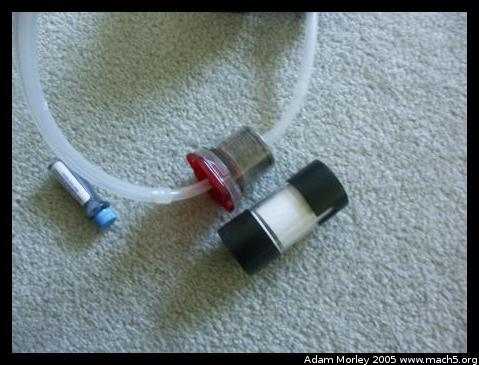
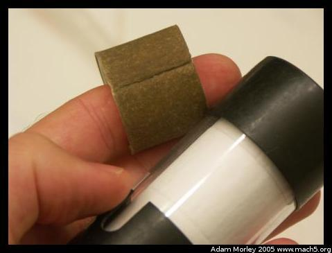
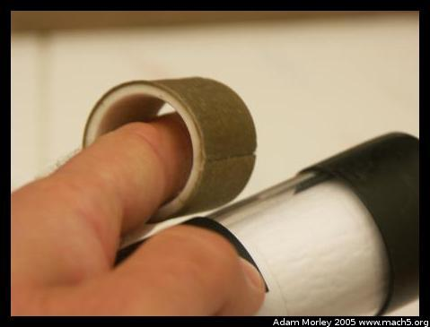

As many of you know, access to clean drinking water is not universal. Many people (around one billion) do not have access to clean drinking water. In the area around Bungoma, this is very true. A few months before I arrived, a number of people at a local school fell ill with Typhoid and died.
Most water comes from boar holes, wells or surface rivers. Boar holes are holes that have been drilled into the ground, all the way down to the water table (about twenty five feet, or about twelve meters). When Kenyans say well, they apparently mean a naturally occurring source of water that isn't a river. This was in contrast to the definition often used in the USA.
Even though some families obtain their water from boar holes, the water can be contaminated with parasites or other infectious diseases. This is especially true of surface water, as it can often be contaminated by run off from farms or homesteads upstream.
I am sometimes asked, "Well, why don't people just build a boar hole?" This seems like an easy solution to possibly contaminated surface water, but one has to keep in mind that the supplies for constructing a boar hole are usually only located in major towns. One needs concrete to stabilize the hole, tools to dig down twenty-five feet and other items. It is also important to know where the water table is --- because if one simply digs twenty five feet down there may be no water.
In the case of ICODEI, a volunteer helped to plan and construct a rain-water catchment, and a boar hole. This provides a stable source of water for the family, the clinic, the volunteers and the school.
In rural Kenya, there exists tools to purify water. One such tool, called WaterGuard, is a dilute bleach solution. This is similar to the chlorine that is added to most treated water in the developed world. As you may remember from the people page, WaterGuard has to be used in fairly high amounts to be effective. And the water has to be mostly free of suspended contaminates for the chlorine treatment to be effective. Is it?
  Not so much. I use a First Need Water Purifier with an MSR siltstopper in series. The MSR siltstopper prolongs filter lifespan, as it filters out the suspended silt. What you see in the above photos is the silt from about a month of drinking water. Water with suspended particles isn't always bad --- it's only bad when it is contaminated. Often dirty water is a sign of water that is more likely to be contaminated. Though, even crystal clear mountain water can be contaminated. It just depends.
But what about everyone else? Most families, if not near a boar hole, will go to a river or naturally occurring water source for their water. This means they are possibly exposed to any number of things.
There have been some creative devices dreamed up for access to clean drinking water. The best idea I've seen so far (in South Africa) is to use the merry-go-round at a school to pump water out of the boar hole and into holding tanks.
But mostly, it is about a lack of access to resources or capital, as it is with so many problems in the developing world.
Adam can be reached at adam dot morley at gmail dot com